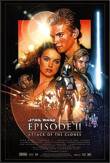
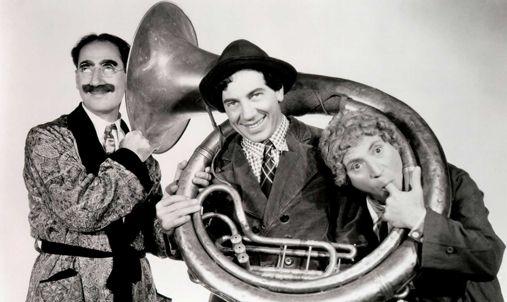

Hey! Through out the time some good movies and series have been made, we would like you to discover them but also a few of your interest perhaps not yet discovered.
Accion and adventure movies
Great film, translated to many languages. This film won the Oscar for best special effects and soundtrack. There are 6 films, it has accion and adventure.
This movies do not even need description, they have been revolutionary and very advanced for the time they were produced.
Mistery movies
Based on J.K Rolling books, who watches this movies gets trapped in a magial world everyone has dreamed about when they were kids.

Comedy
There are many but in our opinion the best one is "Marx Brothers A Night at the Opera". If you want to have a good laugh then you should watch this movies.
